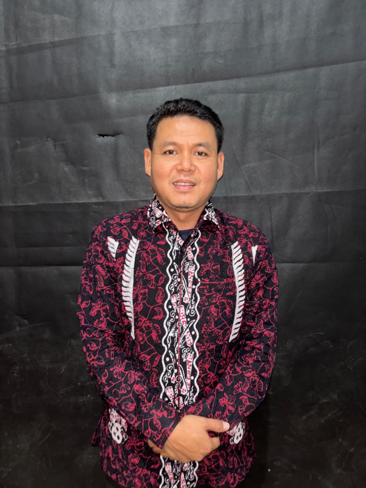
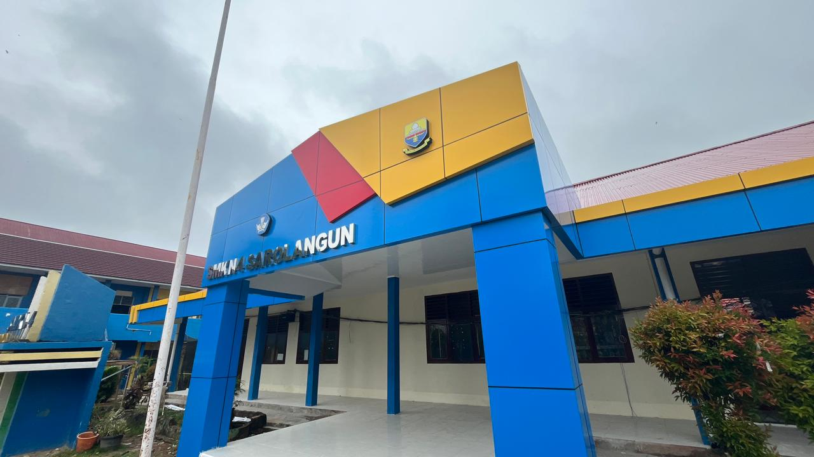
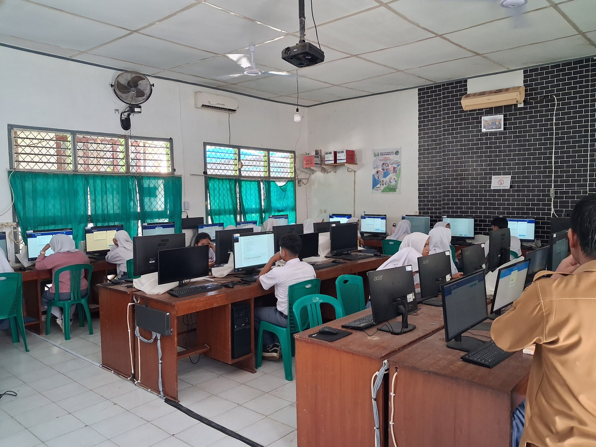
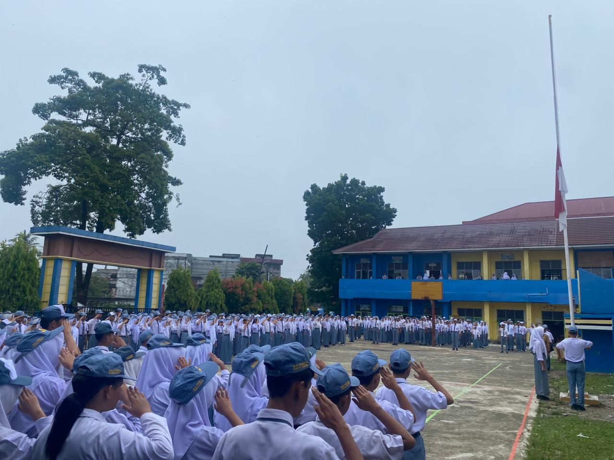

PARTNERSHIP
Siswa kami berhasil meraih juara di berbagai kompetisi teknologi dan desain tingkat nasional.
Sekolah dan siswa kami memiliki sertifikasi dari lembaga internasional terkemuka.
Telah menjalin kerjasama dengan institusi pendidikan dan industri di berbagai negara.
Kepala SMK NEGERI 4 SAROLANGUN
Dengan bangga kami sambut seluruh siswa, orang tua,
Mengusung tagline Be A Real Digital Talent, kami terus menghadirkan pendidikan yang relevan dengan kebutuhan dunia kerja dan industri masa kini. Kami percaya sinergi antara pendidikan dan dari dunia industri adalah kunci untuk menciptakan lulusan yang siap bersaing secara global, baik dari segi keterampilan teknis maupun soft skill yang mumpuni.
SMK
SMK NEGERI 4 SAROLANGUN
Yes we can!
Yes we fight!
Yes we win!

Jurusan PPLG berhubungan dengan software komputer seperti pembuatan aplikasi, website, game dan semua yang berhubungan dengan pemrograman.
Teknik Jaringan Komputer dan Telekomunikasi adalah jurusan yang berisi kompetensi yang mendasari penguasaan keahlian jaringan komputer dan telekomunikasi.
DKV adalah cabang ilmu desain. Di jurusan ini, siswa belajar konsep komunikasi dan ungkapan kreatif dengan menggunakan berbagai elemen visual untuk menyampaikan pesan.
Manajemen Perkantoran dan Layanan Bisnis adalah jurusan yang mempelajari pengelolaan administrasi kantor, layanan bisnis profesional, dan manajemen operasional.
Jurusan yang fokus pada pencatatan keuangan, pembukuan, dan penyusunan laporan keuangan untuk lembaga dan usaha.
Program Broadcasting fokus pada produksi konten video, audio, dan pengelolaan media serta teknik penyiaran profesional.
Program Perhotelan fokus pada pelayanan tamu, housekeeping, serta pengelolaan layanan makanan dan minuman.
Jurusan marketing adalah program studi yang mempelajari strategi dan teknik untuk memasarkan produk atau jasa, yang fokus pada riset pasar, perilaku konsumen, branding, promosi, dan digital marketing.
Fasilitas modern dan lingkungan belajar yang mendukung pengembangan potensi siswa

Fasilitas sekolah yang dirancang dengan arsitektur modern dan nyaman untuk mendukung proses pembelajaran.

Fasilitas laboratorium dengan peralatan canggih untuk mendukung praktik siswa di berbagai bidang keahlian.

Kegiatan upacara bendera setiap hari senin sebagai salah satu tradisi untuk memupuk kedisiplinan, patriotisme, dan karakter siswa SMKN 4 Sarolangun.